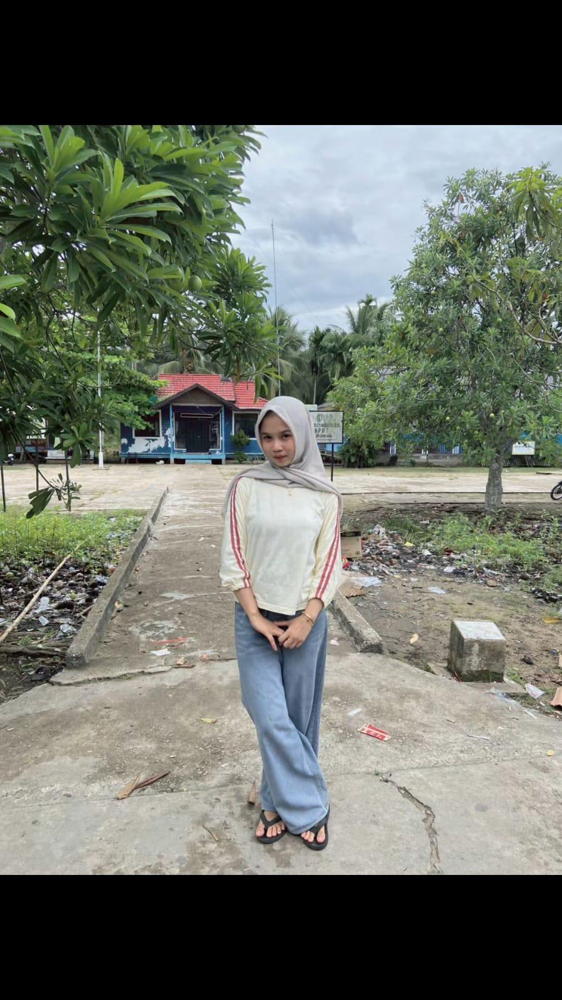
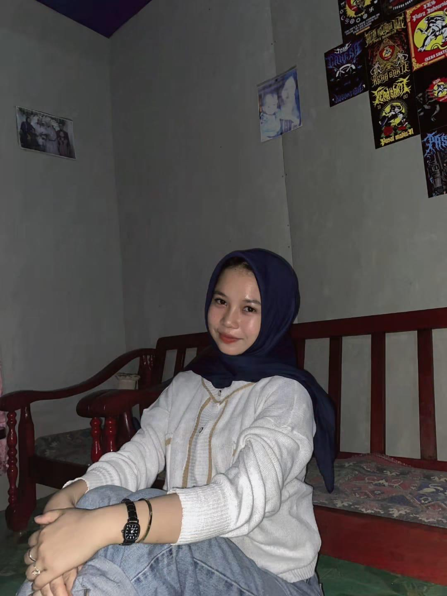

A Special Day • 21 Juni 2008
Hari ini dunia menjadi jauh lebih indah. Selamat menyambut usia yang baru, ruang kecil ini dibuat khusus untuk merayakan kehadiranmu di hidupku.
Memory Lane

can't take my eyes off you
the prettiest soul 🤍

my favorite human 🌸
Selamat ulang tahun yang ke-18, Sayang. Di antara miliaran manusia di bumi, aku selalu bersyukur karena takdir mempertemukan aku dengan jiwa seindah kamu. Kamu adalah alasan di balik senyuman terbaikku, dan kebahagiaan terhangat yang selalu ingin aku jaga.
Melihatmu tumbuh semakin dewasa adalah salah satu hal tercantik yang bisa kusaksikan. Aku berharap di usia yang baru ini, hatimu selalu dilapangkan dengan kedamaian, langkahmu selalu dituntun menuju kesuksesan, dan senyum manismu tidak pernah pudar oleh apa pun.
Terima kasih telah menjadi bagian paling berharga dalam hidupku. Jangan pernah ragu berjalan ke depan, karena genggaman tanganku akan selalu ada di sana untuk menemanimu melewati setiap musim kehidupan. Aku mencintaimu, hari ini, esok, dan seterusnya.
Selamanya milikmu,
Seseorang yang beruntung memilikimu